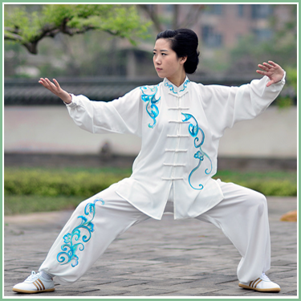
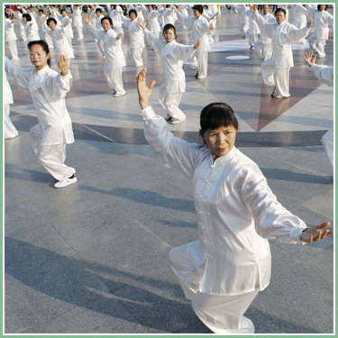

● 太极拳 ●

太极拳国家级非物质文化遗产， 是以中国传统儒、道哲学中的太极、阴阳辩证理念为核心思想，集颐养性情、强身健体、技击对抗等多种功能为一体，结合易学的阴阳五行之变化，中医经络学，古代的导引术和吐纳术形成的一种内外兼修、柔和、缓慢、轻灵、刚柔相济的汉族传统拳术。

武术之乡
河南省温县陈家沟，位于温县城东六公里的清风岭中段。村南隔黄河相望有虎牢关、伏羲台、河洛汇流处等。距陈家沟西北不远处有道教圣地阳落山“二仙庙”，西南一百公里处有少林寺，道教文化、佛教文化与儒教文化都在这里汇集，形成了推动中华文明发展厚重的中原文化。
明朝初年，陈家沟陈氏始祖陈卜从山西移民到此，便带有家传武术。这里沟壑交错、兵匪出没，经常骚扰百姓，为了保卫桑梓，村里成立了武学社，陈家沟人习武成风。这里特殊的人文地理环境和厚重的中华传统文化对陈王廷创编陈氏太极拳产生了深远影响。
流派纷呈
发源于河南省温县陈家沟的太极拳，是东方文化的瑰宝，是中华武苑的古老奇葩，明末清初，由陈王廷潜心研究创编。之后，太极拳先在陈家沟陈氏家族经历了百余年传承，到了陈氏十四世陈长兴（字云亭，1771～1853）和陈有本（字道生，1780～1858）时，二人由博归约，分别创编出太极拳大架一路、二路和太极拳小架一路、二路。陈长兴从理论上对太极拳进行总结，著有《太极拳十大要论》、《太极拳用武要言》、《太极拳战斗篇》等。